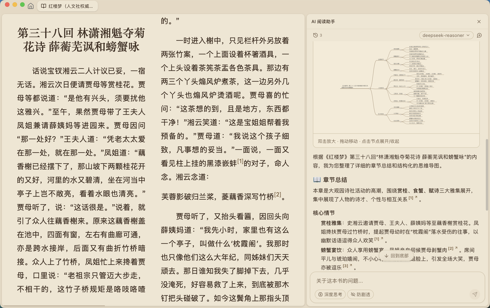

那本 800 页的英文专著，我终于啃完了
研究生阶段最头疼的事莫过于啃一本全英文的大部头教材。从逐页查词到让 AI 对着上下文解释，ReadAny 让我对"阅读"这件事彻底改观。
去年深秋的某个夜晚，我盯着《Designing Data-Intensive Applications》第 14 页那行关于 CAP 定理的脚注，已经整整十分钟了。
脚注里引用了半篇论文，用了三个我查词典也摸不准语境的词，还顺带提到了另一本我没读过的专著。我先是用鼠标把那段话拖进翻译软件——翻译出来的东西比原文还难懂。然后又跳去浏览器搜那篇论文的标题——搜出来的全是中文博客里对同一段文字的二次转述，没人真正解释清楚那句话在这个上下文里到底想表达什么。
这不是第一次了。
读研这一年，导师给的书单里有一半是英文原版。每本书都厚得像块砖，每页都能蹦出三四个我认识但放在一起就不懂的单词。我试过把全书用 Calibre 转成 EPUB 丢进手机里，结果是手机里的书越堆越多，真正读完的一本都没有。试过逐页截图用 OCR 翻译成中文，翻译质量参差不齐，遇到技术名词就彻底乱套。还试过硬啃——啃到第三章就发现前面两章理解错了一半，推倒重来的代价太大。
那天晚上我在实验室群里吐槽了一句"有没有人知道怎么读英文技术书不痛苦"，一个平时潜水的师兄突然跳出来，甩了一句话："装个 ReadAny，你会回来谢我的。"
我抱着"反正也没别的办法"的心态，去 ReadAny官网 找了安装包。安装包从下载拿的，Windows 上装东西就那么回事，双击、下一步、完成，前后不到三分钟。启动之后弹了个设置向导，让我选语言、填 AI 提供商的 API 密钥、选书库存哪里。语言直接选了简体中文，API 密钥我手头有之前申请的一家国内大模型服务商的，填进去测试通过，书库位置就放默认的用户目录——整个过程比我预想的简单太多。
向导结束后进入主界面，空空荡荡的书架等着我往里塞书。我想起那本厚得吓人的 DDIA，就把它从文件夹里直接拖了进去。
ReadAny 没让我等太久。几秒钟后，书的封面就出现在了书架上。我点击封面进入阅读界面，久违的排版让我松了口气——字体不挤，行距舒适，背景是护眼的米白色，顶部还有章节导航。我翻到了那晚卡壳的第 14 页，把光标停在了那段 CAP 定理的脚注上。
然后我看到了鼠标选中文字后弹出的那个小按钮："对这段话提问"。
我点了它。输入框弹出来了，我敲了一行字："这段脚注想说明什么？用大白话讲，就像给一个高中生解释一样。"
几秒钟后答案出来了。AI 没有给我一段生硬的机器翻译，也没有扔给我一串需要自己分辨真伪的维基链接。它直接告诉我：这段脚注是作者在回应一个常见的误解——很多人把 CAP 定理理解成"三选二"，但实际上作者认为这是对定理的过度简化，真正重要的是理解网络分区的边界条件。然后它用我能听懂的语言，把那个边界条件是什么解释了一遍，还顺带提到了原文里作者在下一章会重新回到这个话题。
我盯着屏幕愣了好一会儿。不是因为答案有多惊艳，而是因为它精准。它没有胡编乱造，它回答的就是那段脚注本身想表达的意思——不扩展、不发散、不幻觉。就好像有一个人坐在我旁边，翻到这一页，指着这段文字给我讲。
从那天开始，我的阅读习惯被彻底改写了。
以前读英文书是"逐词查、逐句译、读了后面忘了前面"。现在是"读到哪里、想到哪里、问就问"。看到一段引用了论文的话没看懂——选中、问出处和原意。作者在这一章给出了一个结论但没展开——问这个结论和前面几章的论点有什么关联。甚至连"这一章的核心论点是什么"这种我以前会自己对着目录发呆十分钟的问题，现在直接敲进输入框，AI 几秒钟就给我总结好了。
最让我惊喜的是"追问"这个功能。有一次我问："作者为什么推荐依赖注入而不是 Service Locator？"AI 给了一段很完整的回答。我看完觉得好像还有反例，就直接接着问："能举一个反例吗——什么情况下 Service Locator 反而更合适？"它又给出了一段回答，而且明显是基于之前的上下文——没有重新解释什么是依赖注入，直接切入反例。我甚至不需要重新陈述问题，对话链条自己就接上了。

书库导入的方式我后来也摸清楚了。最省事的是直接拖文件夹——我把导师给的那个"必读书单"文件夹整个拖进 ReadAny，它自动扫出了里面所有的 EPUB 和 PDF，一本一本加上封面、提取元数据、生成语义索引。整个过程我不需要做任何手动操作，就看着进度条慢慢走完，几十本书整齐地出现在书架上。后来我才知道，如果你用 Calibre 管理书库，ReadAny 还能设置一个"监控目录"，以后往那个目录里扔新书它会自动导入——相当于 ReadAny 变成了你现有书库的"AI 增强前端"，而不是另起炉灶。
用到大概第三周的时候，我遇到了一个小麻烦。那天白天在实验室的台式机上读了一上午，做了不少高亮和笔记；晚上回到宿舍，想在笔记本电脑上接着读。但笔记本里没同步我的阅读进度。
ReadAny 的同步功能此时派上了用场——我之前翻了一下 ReadAny文档 里关于 WebDAV 同步的配置说明，跟着几步就配好了。我找了一台云服务器上跑的 WebDAV 服务，在台式机上配置好同步地址和账号密码，点了"立即同步"。然后打开宿舍的笔记本，同样的配置，再点一次同步——几秒钟后，那本书的进度、我做的所有高亮、还有几条笔记，全都出现在了笔记本上。我甚至可以在笔记本上继续给那段 CAP 定理的脚注提问，AI 回答时知道我之前高亮过什么、问过什么，对话链条在两台设备之间无缝衔接。
当然也不是没有过小波折。有一次我在两台设备上都没同步的情况下，分别对同一本书做了修改——台式机上高亮了第三章的几个段落，笔记本上在同一段加了笔记。同步之后 ReadAny 检测到了冲突，弹出了"查看冲突"的列表，让我逐个选择保留哪个版本。这个小插曲让我养成了一个习惯：换设备之前先点一下同步按钮。五分钟的自动同步间隔也帮我减少了冲突窗口，后来就再也没遇到过了。
那本 DDIA 我最终用了三周读完——比我预想的快了至少一半。更重要的是，这次我没有"读完"就忘。每一个我当时没理解的概念，我都让 ReadAny 帮我拆解过；每一个引用的论文和专著，我都让它帮我定位过原文出处。最后我还把 AI 回答里最精华的几条选中后高亮进了书里，现在回头翻那些高亮，相当于有了一份自己的"阅读笔记精华"。
读研这条路注定要和一堆厚厚的专业书打交道。以前我把它们当成需要"攻克"的难关，每读一本都像打一场仗。现在我把 ReadAny 装在每一台常用的设备上，书库里躺着三十多本等着我慢慢啃——不再焦虑，因为我知道，读到卡住的地方，敲几个字就能有人给我讲明白。
这套解决方案我在 GitHub、Gitee 和 GitCode 三个仓库都存了一份，以防哪天某个仓库访问不了。毕竟对学生党来说，趁手的工具比什么都珍贵。